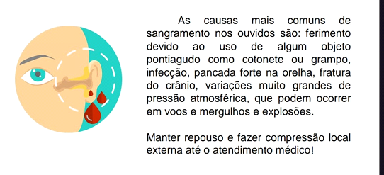
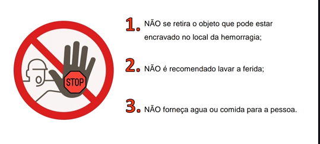

Complicações potenciais da hemorragia
Sangramento nasal
Deve-se fazer uma pressão direta na narina com um lenço, respirar pela boca e manter a cabeça na posição neutra ou ligeiramente inclinada para frente. Não assoe o nariz! Se continuar a sangrar, aplique compressa de gelo na base do nariz. Se não resolver, vá ao pronto-socorro.
Sangramento no ouvido
As causas mais comuns de sangramento nos ouvidos são: ferimento devido ao uso de algum objeto pontiagudo como cotonete ou grampo, infecção, pancada forte na orelha, fratura do crânio, variações muito grandes de pressão atmosférica, que podem ocorrer em voos e mergulhos e explosões. Manter repouso e fazer compressão local externa até o atendimento médico!

O QUE NÃO FAZER !!
NÃO se retira o objeto que pode estar encravado no local da hemorragia; NÃO é recomendado lavar a ferida; NÃO forneça água ou comida para a pessoa.
